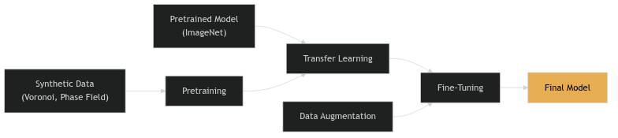
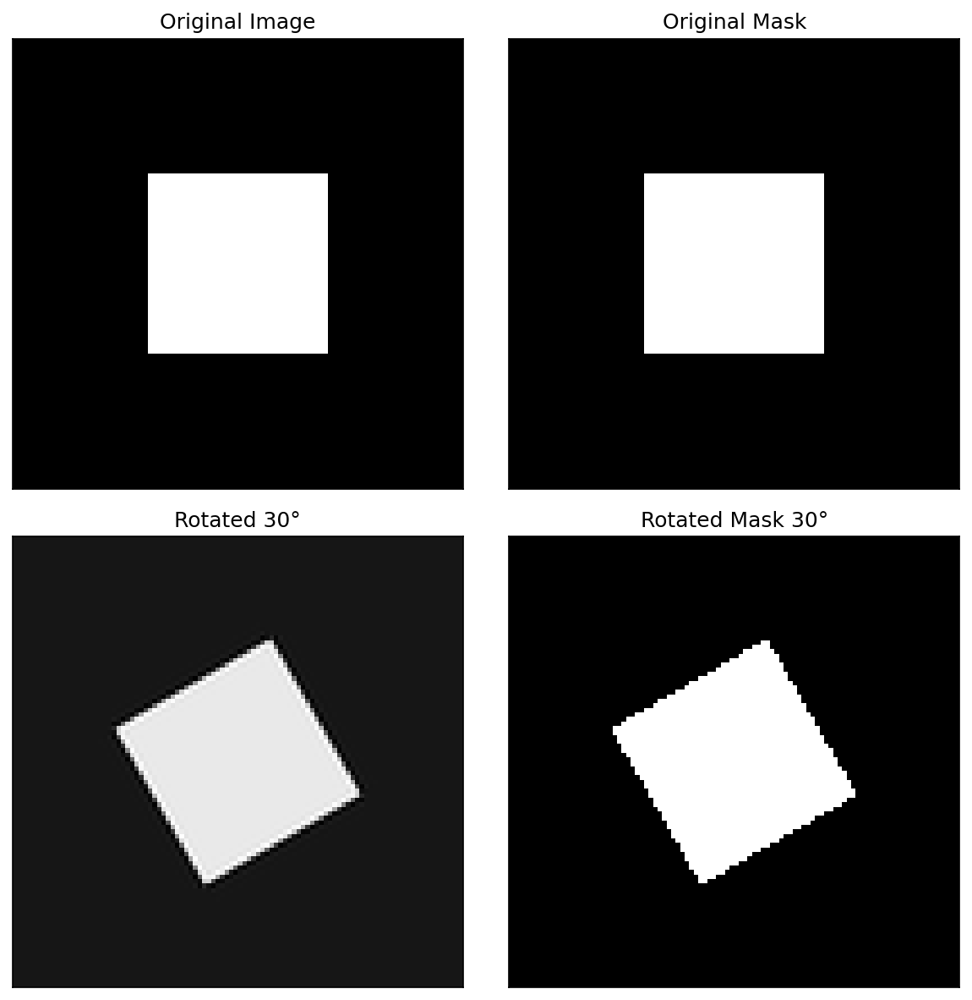
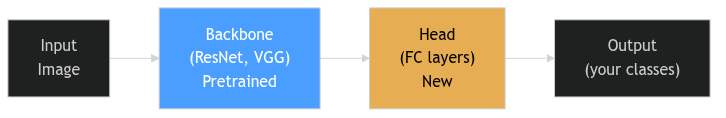
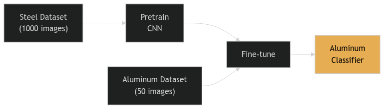
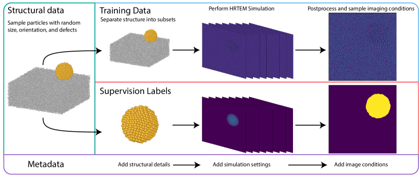
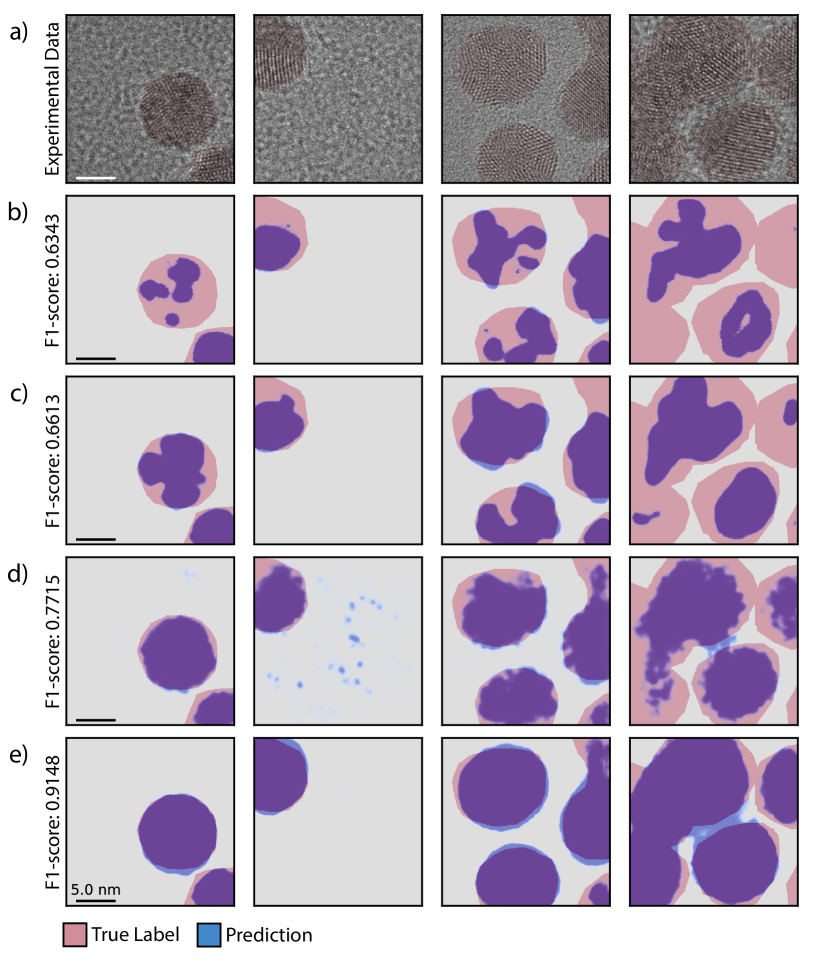
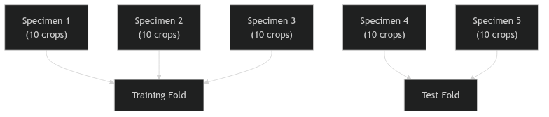

Machine Learning in Materials Processing & Characterization
Unit 6: Data Scarcity & Transfer Learning
FAU Erlangen-Nürnberg


01. The Materials Data Bottleneck
- Expensive data: 1 micrograph ≈ hours of prep + days of labeling
- Big models vs. small data: A model with \(10^7\) parameters will memorize 100 samples
- Goal: Build deep models that generalize even when data is scarce
02. Learning Outcomes
By the end of this unit, you can:
- Explain why materials data is scarce and how this leads to overfitting
- Design physically valid augmentation pipelines
- Distinguish feature extraction from fine-tuning in transfer learning
- Apply gradual unfreezing and differential learning rates
- Evaluate synthetic-to-real transfer approaches
- Build a complete small-data training workflow
Part 1: The Small Data Challenge
03. The “Big Data” Myth in Materials Science
- Materials labs generate TBs of raw data (e.g., 4D-STEM datasets)
- But labeled data is extremely sparse
- In computer vision (ImageNet): labels are cheap (crowdsourcing)
- In materials science: labels require PhD-level experts and hours of annotation
04. Why Is Materials Data Scarce?
- High acquisition cost: Synchrotron beamtime, specialized TEMs
- Limited facility access: Only a few instruments in the world for some techniques
- Expert annotation time: Segmenting 100 grains in an SEM takes hours
- Reproducibility barriers: Different instruments produce different images
05. The Labeled Data Gap
| Domain | Typical Dataset Size | Labels |
|---|---|---|
| ImageNet | 14,000,000 images | Crowdsourced |
| Medical Imaging | 10,000–100,000 | Expert radiologists |
| Materials Science | 50–500 images | PhD microscopists |
Standard deep learning (ResNet-50: 25M parameters) is designed for 1M+ images.
If we train from scratch on 100 images → guaranteed overfitting.
06. Overfitting on Small Data
- Model “memorizes” specific noise and artifacts of those 100 images
- Fails catastrophically on a new dataset from a different microscope
- Classic symptoms:
- Training accuracy: 99%
- Test accuracy: 55% (barely better than random)
07. The “Small Data” Survival Kit
Three strategies to overcome data scarcity:
- Data Augmentation: Multiply data by applying valid transformations
- Transfer Learning: Reuse knowledge from large-dataset models
- Synthetic Training: Generate labeled data for free using simulations

08. Part 1 Recap
- Materials science has a labeled data bottleneck (50-500 images typical)
- Standard deep learning overfits massively on small datasets
- Three complementary strategies: Augmentation, Transfer, Synthetic
- These strategies are not alternatives — use them all together
Part 2: Data Augmentation
Slides 09–20
09. Concept: Artificially Expanding the Dataset
- “Reusing existing images by applying transformations”
- A form of oversampling — the same physical content, different pixel arrangements
- Forces the network to focus on structure, not specific pixel patterns
10. Geometric Transformations
- Flips: Horizontal, vertical
- Rotations: 90°, 180°, 270° (or arbitrary angles)
- Scaling/Cropping: Zoom in/out, random crops
- Elastic deformation: Simulating sample warping or drift
Each transformation multiplies your effective dataset size. Flips alone give 4× more data.
11. Invariance via Augmentation
- By rotating images, we force the network to be rotation-invariant
- Crucial for microstructures where “up” and “down” are arbitrary
- The augmentation encodes physical knowledge into the training process
12. When Augmentation Is “Illegal”
Physical reality check: Transformations must not violate materials physics!
- Don’t rotate if there’s a physical gradient (e.g., surface hardening layer, directional solidification)
- Don’t flip vertically if gravity matters (e.g., sedimentation structures)
- Don’t warp if topology is critical (e.g., grain boundary network connectivity)
Think before you augment: “Would this transformation produce a physically plausible image?”
Note
Augmentation is a way to tell the network: “This transformation doesn’t change the physics.”
13. Intensity Transformations
- Brightness jittering: ±10-20% intensity variation
- Contrast adjustment: Simulating different detector settings
- Gamma correction: Non-linear intensity mapping
Purpose: Make the model robust to different imaging conditions. A model trained at one brightness level should work at another.
14. Adding “Physical” Noise
Gaussian noise: Electronic/thermal noise
- Simulates detector readout noise
- Makes model robust to noisy images
Poisson/Shot noise: Counting statistics
- Simulates low-dose conditions
- Important for electron microscopy
Blur: Gaussian or motion blur
- Simulates defocus or sample drift
- Forces model to rely on structure, not sharpness
15. Advanced Augmentations
- CutOut / Random Erasing: Mask random regions with zeros
- Handles occlusions and artifacts (contamination spots)
- Mixup: Linear combination of two images and their labels
- \(x' = \lambda x_1 + (1-\lambda) x_2\), \(y' = \lambda y_1 + (1-\lambda) y_2\)
- Regularizes the model, smooths decision boundaries
16. Implementation: Torchvision & Albumentations
import albumentations as A
transform = A.Compose([
A.HorizontalFlip(p=0.5),
A.RandomRotate90(p=0.5),
A.GaussNoise(var_limit=(10, 50), p=0.3),
A.RandomBrightnessContrast(p=0.3),
A.ElasticTransform(alpha=120, sigma=6, p=0.2),
])
# Apply to image AND mask simultaneously
augmented = transform(image=image, mask=mask)17. On-the-fly vs. Offline Augmentation
Offline:
- Generate augmented images on disk before training
- Pro: Faster training
- Con: Fixed set of augmentations
On-the-fly (preferred):
- Transform images in RAM during each batch
- Pro: Infinite diversity — each epoch sees different augmentations
- Con: Slightly slower per batch
18. The Label Consistency Rule
If you transform the image, you must transform the labels identically!
- Rotate image → rotate mask
- Flip image → flip mask
- Crop image → crop mask at the same location

Intensity augmentations (brightness, noise) don’t affect labels — only geometric ones do.
19. Think About This: Augmentation Design
Scenario: You have 50 SEM images of a laser-welded joint. The weld bead runs left-to-right. You want to classify weld quality (good/defective).
Which augmentations are valid?
- Horizontal flip: Valid (symmetric about weld center)
- Vertical flip: Invalid (top surface ≠ bottom)
- 90° rotation: Invalid (weld direction matters)
- Brightness jitter: Valid
- Gaussian noise: Valid
20. Part 2 Recap
- Augmentation multiplies your effective dataset size
- Geometric transforms encode physical symmetries
- Only apply transformations that produce physically plausible images
- Noise augmentation prepares models for real experimental conditions
- Always transform images and labels together
Part 3: Transfer Learning
Slides 21–32
21. Concept: Knowledge Reuse
“Learning on Peas to count Lentils.” — Sandfeld (2024)
- Take a model trained on Task A (e.g., classifying dogs vs. cats)
- Adapt it for Task B (e.g., classifying phases in micrographs)
- Why does this work? Because early visual features are universal
22. Why ImageNet Features Transfer
ImageNet: 14 million images, 1000 classes (dogs, cats, cars, buildings…)
The hierarchical features learned on ImageNet:
- Layer 1: Edges, gradients → universal
- Layer 2: Textures, corners → mostly universal
- Layer 3: Object parts → domain-specific
- Layer 4+: Full objects → very domain-specific
Early layers transfer well. Late layers need adaptation.
23. The Backbone and the Head

- Backbone: The feature extractor — pretrained on ImageNet
- Head: The classifier/regressor — newly initialized for your task
- Replace the head to match your number of classes
24. Strategy 1: Feature Extraction
- Freeze the entire backbone (no weight updates)
- Train only the new head on your materials dataset
- The backbone becomes a fixed feature extractor
When to use: Very small dataset (<100 images), risk of overfitting is high.
Advantage: Fast training, minimal risk of destroying pretrained features.
Disadvantage: Cannot adapt backbone to domain-specific textures.
25. Strategy 2: Fine-Tuning
- Initialize with pretrained weights
- Train the entire network (or the last few layers)
- Use a very low learning rate for the backbone
When to use: Moderate dataset (100-1000 images), enough to adapt the backbone.
Advantage: Backbone adapts to “micrograph-specific” textures.
Risk: Catastrophic forgetting — destroying useful pretrained features with aggressive updates.
26. Differential Learning Rates
- High LR for the head (\(10^{-3}\)): Learning new classes from scratch
- Low LR for the backbone (\(10^{-5}\)): Gently adapting existing features
- Ratio: Typically 100× between head and backbone
27. Gradual Unfreezing
A safer fine-tuning protocol:
- Freeze all backbone layers. Train head until convergence.
- Unfreeze the last backbone block. Train with low LR.
- Unfreeze the next block. Train further.
- Repeat until the entire network is fine-tuned.
This prevents catastrophic forgetting of low-level features while allowing high-level adaptation.
28. The Domain Gap: Natural vs. Scientific
Natural images and micrographs differ in:
- Color: RGB vs. grayscale / 16-bit
- Perspective: 3D with vanishing points vs. orthographic top-down
- Textures: Organic, varied vs. crystallographic, periodic
- Noise: Compression artifacts vs. shot noise
If the domain gap is large, more fine-tuning is needed. Feature extraction alone may not suffice.
29. Cross-Material Transfer
- Train on a large database of steel micrographs
- Fine-tune on a small set of aluminum samples
- Physics intuition: Grain boundary topology is similar across alloy systems

30. Success Story: Au Nanoparticle Segmentation
- Task: Segment crystalline Au nanoparticles from amorphous TEM background
- Method: U-Net initialized with ImageNet weights
- Result: High accuracy despite limited labeled TEM frames

ImageNet pretraining helped even though ImageNet contains no TEM images — the low-level features transferred.
31. Transfer from Simulations
- Pretrain on simulated data (DFT, molecular dynamics, phase field)
- Fine-tune on real experiments
- Advantage: Simulations provide unlimited labeled data at zero annotation cost
The next frontier: physics-simulation-based pretraining for materials ML.
32. Part 3 Recap
- Don’t train from scratch — always start with a pretrained backbone
- Feature extraction: Freeze backbone, train head only (safest)
- Fine-tuning: Adapt backbone with low LR (more powerful)
- Gradual unfreezing prevents catastrophic forgetting
- Differential learning rates: 100× between head and backbone
- Transfer works across domains (natural → scientific) and materials (steel → aluminum)
Part 4: Learning from Synthetic Data
Slides 33–43
33. The “Infinite Data” Dream
- Simulate the structure → generate unlimited labeled data
- Perfect masks for free — no expert annotation
- Controllable — sweep grain size, defects, dose, aberrations at will
Note
The labeling arrow flips: instead of labeling real images, we render images from known structures.
Made concrete — Construction Zone (Rakowski et al., npj Comput. Mater. 10, 165, 2024): build thousands of random Au nanoparticles on carbon → multislice HRTEM simulation → physical post-processing (thermal, aberrations, plasmon loss, Poisson noise) → segmentation masks by construction.

34. …And It Works: Purely Synthetic Beats Experimental SOTA
A U-Net trained only on simulated HRTEM — zero experimental images in training — segmenting real Au / CdSe nanoparticles:
| Benchmark | Synthetic-trained F1 | Prev. best (real-trained) |
|---|---|---|
| Au, large (5 nm) | 0.92 | 0.89 |
| Au, small (2.2 nm) | 0.86 | 0.75 |
| CdSe (2 nm) | 0.75 | 0.59 |
Important
The twist: what mattered was imaging-condition diversity + simulation fidelity — not the number of unique atomic structures. Simulate the right variation, not more structures.

35. Generating Grain Microstructures
Voronoi Tessellations:
- Distribute random seed points in 2D
- Assign each pixel to its nearest seed → grain regions
- Parameters: number of seeds (grain count), regularity, boundary thickness

36. From Geometry to Realistic Image
A raw Voronoi diagram doesn’t look like an SEM image. We need to add:
- Grain contrast: Random intensity per grain
- Boundary appearance: Thickened, possibly bright or dark boundaries
- Texture: Per-grain crystallographic texture
- Noise: Gaussian + Poisson to simulate detector noise
- Blur: Slight defocus
37. The Sim-to-Real Gap
- Synthetic data is often “too clean” or “too regular”
- Real microstructures have:
- Non-uniform lighting
- Sample preparation artifacts (scratches, contamination)
- Complex grain morphologies that Voronoi can’t capture
CNNs might learn synthetic-only features and fail on real SEMs.
38. Domain Adaptation: Closing the Gap
Making synthetic images look more like real ones:
- Style transfer: Apply the “style” of real SEMs to synthetic geometry
- GANs (Generative Adversarial Networks): Train a generator to produce realistic textures
- Noise modeling: Use measured noise characteristics from real instruments
39. Case Study: SEM Grain Segmentation
- Model trained only on Voronoi synthetic data
- Tested on real polycrystalline SEM images
- Result: Nearly perfect grain boundary segmentation!

The synthetic data captured the topological truth of grain networks — boundaries, junctions, and connectivity patterns.
40. Adaptive Data Generation
- Train on 1000 synthetic images
- Test on real images → find the hardest cases (worst predictions)
- Analyze what makes them hard (unusual grain shapes? specific textures?)
- Generate targeted synthetic data mimicking those hard cases
- Retrain and iterate
This is a form of active learning for synthetic data generation.
41. Procedural Generation for Spectra
Synthetic data works for more than images:
- XRD patterns: Simulate peaks with varying noise, background, and peak overlap
- EELS spectra: Simulate edges with realistic energy loss and plural scattering
- EDS maps: Simulate elemental distributions with counting noise
The same principle: if you can simulate it, you can label it for free.
41. Think About This: When Synthetic Data Fails
Scenario: You generate synthetic EBSD maps using a grain growth simulation. Your CNN achieves 95% accuracy on synthetic test data but only 60% on real EBSD maps.
What went wrong?
Possible causes:
- Sim-to-real gap: Simulated grain shapes too regular
- Missing artifacts: Real EBSD has indexing errors, no-solution pixels
- Missing physics: Simulation doesn’t capture twinning or deformation textures
- Overfitting to synthetic style: Model learned simulation artifacts
43. Part 4 Recap
- Synthetic data provides unlimited labeled data at zero annotation cost
- Voronoi tessellations are a simple but effective grain generator
- Realism pipeline (contrast, texture, noise, blur) bridges the sim-to-real gap
- Domain adaptation (style transfer, GANs) for difficult domain gaps
- Adaptive generation focuses on the hardest cases
Part 5: Practical Workflow & Best Practices
Slides 44–51
44. The Complete Fine-Tuning Recipe
- Select a pretrained architecture (e.g., ResNet-50, EfficientNet)
- Replace the final layer for your number of classes/targets
- Freeze all backbone layers
- Train the head with standard LR (\(10^{-3}\)), augmented data
- Unfreeze gradually, train with low LR (\(10^{-5}\))
- Early stopping based on validation loss
Note
This recipe works for 90% of materials classification and segmentation tasks.
45. Validation in the Small Data Regime
- K-Fold CV is mandatory (Unit 3 review)
- Be extremely wary of augmentation leakage: don’t have an image and its rotation in both train and test!
- Always split by specimen, not by individual crop
46. Group-Based Splitting Revisited

- If you have 5 specimens with 10 crops each = 50 images
- Split by specimen: 3 train, 2 test (not 40 random/10 random!)
- Then augment the 30 training images to 300+
47. Early Stopping
- Monitor validation loss during training
- Stop when validation loss starts increasing (even if training loss is still decreasing)
- Small datasets are prone to sudden overfitting late in training
48. Active Learning: Maximizing Expert Time
- Instead of labeling all images equally, let the model guide annotation
- Uncertainty-based: Label images where the model is most uncertain
- Diversity-based: Label images that are most different from already-labeled data
Maximizes the value of every expert hour — 50 strategically chosen labels can beat 500 random ones.
49. The “Gold Standard” Test Set
- Even with TL/augmentation/synthetic data, you need a small, high-quality benchmark test set
- Hand-labeled by multiple experts
- From a different instrument or session than training data
- This is the absolute benchmark — never touched during training
Your model is only as credible as your test set is rigorous.
50. Summary: The Complete Small-Data Strategy
- Augment your data to enforce physical invariances
- Transfer knowledge from ImageNet or domain-specific pretrained models
- Synthetic data provides infinite labels if generated carefully
- Validate rigorously: grouped K-fold, early stopping, gold standard test set
- Combine all three strategies for maximum effectiveness
51. Unit 6 Summary & Next Steps
Key Takeaways:
- Materials science is the land of small data — act accordingly
- Augmentation is free — use it always, but respect the physics
- Transfer learning is the single most impactful technique
- Synthetic data can replace expensive annotation
- Validation must be even more rigorous when data is scarce
Reading:
- Sandfeld (2024): Ch. 19.2-19.3 (Sandfeld et al. 2024)
- McClarren (2021): Ch. 6.4 (Transfer Learning) (McClarren 2021)
- Neuer (2024): Ch. 4.2.1 (Generalization) (Neuer et al. 2024)
Next Week: Unit 7 — Learning from Processing Data: Time Series & Sequence Models
Continue
References

© Philipp Pelz - Machine Learning in Materials Processing & Characterization